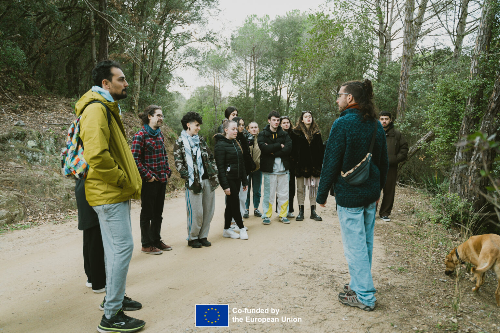
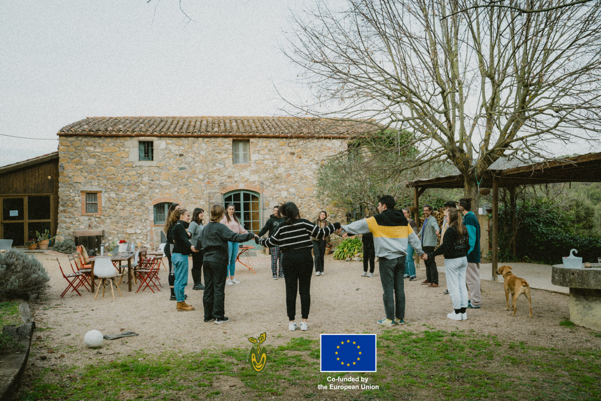
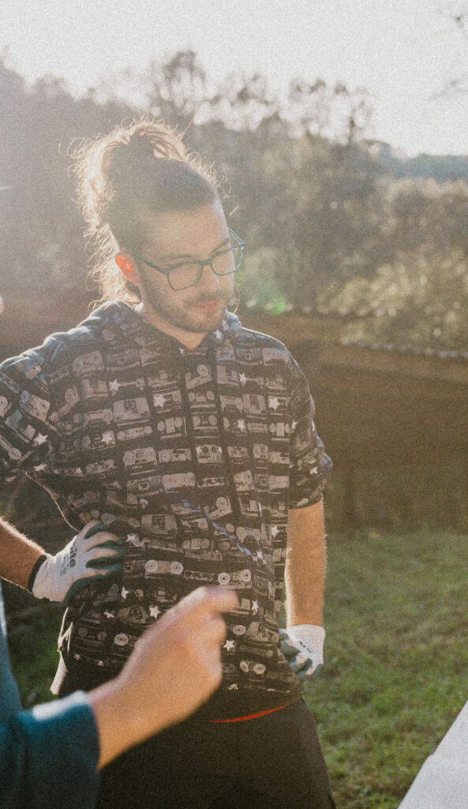

Educación ambiental
Reconexión con la naturaleza, residuos cero, agroecología y soluciones frente a la despoblación rural y la crisis climática.

Educadores, artistas y ambientalistas que empoderan a la juventud europea para transformar sus comunidades.
Somos una entidad comprometida con la educación ambiental y la expresión artística como herramientas para reconectar a las personas con la naturaleza, fortalecer las comunidades y generar cambios positivos en nuestro entorno.
Nacimos en 2020 con una idea sencilla: recuperar el vínculo con la tierra, poner en valor las tradiciones y crear nuevas formas de afrontar retos actuales como la despoblación rural y la crisis climática.
A través de proyectos nacionales y europeos, combinamos el aprendizaje, la creatividad y la participación juvenil en ámbitos como el cine, el teatro y la música, porque creemos que el arte es un lenguaje universal capaz de inspirar, unir personas y transformar realidades.

Impulsamos experiencias educativas que capacitan a jóvenes europeos para ser promotores de una transformación eco-social en sus comunidades.
Reconexión con la naturaleza, residuos cero, agroecología y soluciones frente a la despoblación rural y la crisis climática.
Intercambios y formaciones que reúnen a jóvenes de toda Europa y los convierten en agentes de cambio.
Música, teatro, cine y fotografía como lenguaje universal para expresar ideas, emociones y provocar el cambio.
Gamificación y educación ambiental
Descarga nuestro último recurso educativo: un toolkit para llevar la gamificación y la educación ambiental a cualquier aula o espacio al aire libre.
Ofrecemos talleres de educación ambiental y expresión artística, adaptados a cada grupo y espacio.
Porque un joven que se reconecta con la tierra siembra un futuro más justo y sostenible para toda su comunidad.
Frente a la desconexión con la naturaleza, apostamos por experiencias transformadoras.
Educadores, artistas y ambientalistas que comparten una misma vocación.

Graduado en Ciencias Ambientales y especializado en Diseño Sostenible y Agroecología.
Máster en agroecología y expresidenta de una organización sueca contra el desperdicio de alimentos.
Ingeniero de sonido y productor musical con más de 8 años coordinando el sonido de eventos en Barcelona.
Biografía en camino — muy pronto actualizaremos esta ficha con su presentación completa.